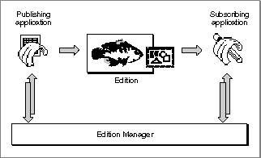
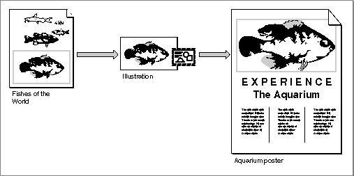
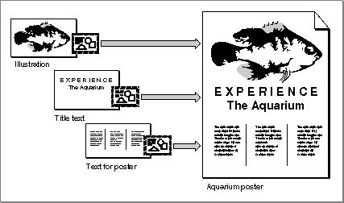

Sharing Data Among Applications
All Macintosh applications can use the Scrap Manager to share static data by allowing the user to copy and paste data between documents. Dynamic data sharing, or automated copy and paste operations between applications, extends this capability to dynamically changing data. The Edition Manager lets applications share dynamic data at the user's request. You incorporate publish and subscribe capabilities in your application much as you incorporate copy and paste capabilities.A user can publish data by selecting a portion of text, graphics, or other data in a document and choosing Create Publisher from the Edit menu. In response, your application saves the selected information in a separate file. This stored information is referred to as an edition. The user can subscribe to an edition by choosing Subscribe To from the Edit menu; when the user selects a file that contains an edition, your application includes the information from the edition in the current document. The information in an edition can be shared by many documents.
Figure 1-2 shows the principal relationships among the Edition Manager, the publishing application, the subscribing application, and the file that contains the edition. In addition to the relationships illustrated in the figure, the Edition Manager uses the Apple Event Manager to communicate with applications that are sharing dynamic data.
Figure 1-2 Sharing data with the aid of the Edition Manager

A publisher is a portion of a document that is made available to other documents through an edition. A subscriber is a portion of a document that reads the information from an edition.
Figure 1-3 shows a document containing a publisher, a file containing an edition, and a document containing a subscriber. The bottom fish in the Fishes of the World document is a publisher. The information from this publisher is made available to other documents through the Illustration edition. The Aquarium poster document contains a subscriber that gets its information from the Illustration edition. Note that when a user selects a publisher or subscriber within a document, your application should display a border surrounding the publisher or subscriber.
In general, when a user modifies the contents of a publisher and saves the document, your application should write the new data to the edition. The Edition Manager then uses the Apple Event Manager to inform all open applications with subscribers to the edition that it has been updated. These applications can then automatically update the subscribers in the documents.
Figure 1-3 A publisher, an edition, and a subscriber

For example, suppose the user changes the color of the fish in the Fishes of the World document shown in Figure 1-3, then saves the document. This automatically changes the Illustration edition, and the subscribing application can update the Aquarium poster document if that's what the user wants to do.
Figure 1-4 shows how a user might create a poster from information contained in other documents.
Figure 1-4 Sharing dynamic data with other applications

Your application should save the new information in the edition whenever the user edits the publisher and saves the document that contains the publisher--unless the user has indicated that the information should be saved in the edition on request only. When the user saves new information in an edition, the Edition Manager replaces the previous contents.
When an edition is updated, the Edition Manager informs your application. Your application should then update any subscribers (unless the user has indicated that updates should be incorporated on request only).
For example, suppose a user opens a word-processing document called My Stocks that accesses information from an edition called Stock Report. The Stock Report edition might be updated twice a day by an online database. As the information in the edition changes, the My Stocks document can receive automatic updates with the latest information.
You can implement publish and subscribe capabilities in your application by using the routines provided by the Edition Manager and supporting the related Apple events. The chapter "Edition Manager" in this book provides sample code that shows how to add these features to your application. The chapter "Responding to Apple Events" in this book describes how to support the related Apple events.